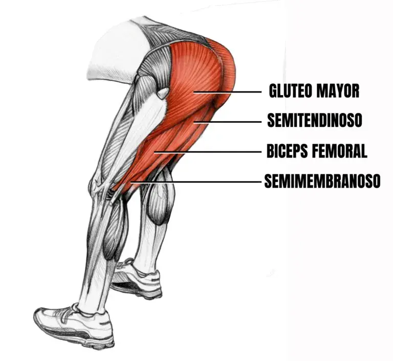

CADENA POSTERIOR: DOMINGOEnfoque en Profundidad y GlúteoCerramos la semana destruyendo las piernas desde atrás. Activamos abdomen y aductores de la misma forma que el miércoles, para después pasar a las series pesadas rompiendo el paralelo con máxima exigencia mecánica. Bloque 1: Activación Pélvica• Calentamiento Core/Aductores: Mismos movimientos de control abdominal y apertura pélvica para preparar las articulaciones (Solo aproximación).
Bloque 2: Destrucción de Cadena Posterior• Perfect Squat (Sentadilla Sumo): Apertura de piernas amplia apuntando las puntas hacia afuera para un enfoque masivo en aductores, glúteos y cuádriceps profundos (1 calentamiento, 2 efectivas full fallo). • Hip Thrust en Máquina: Carga pesada buscando una contracción isométrica de 1 segundo arriba, bloqueando la pelvis con fuerza (1 calentamiento, 2 efectivas full fallo). • Femoral Acostado: Aislamiento total de los isquiotibiales controlando la bajada para evitar tirones (1 calentamiento, 2 efectivas full fallo). • Costurera (Pantorrilla Sentado): Último bombeo para las fibras lentas del sóleo (1 calentamiento, 2 efectivas full fallo).
 |